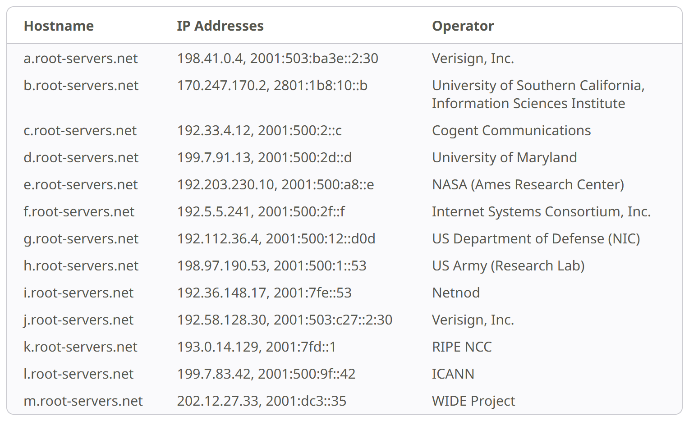
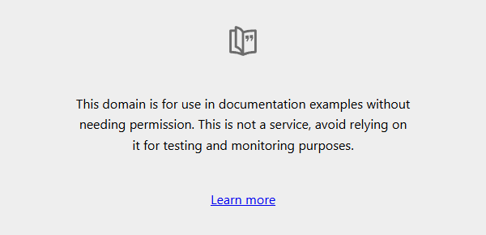

Cách đọc một dòng output
Tài liệu mẫu bao giờ cũng cho ra output đẹp, vì người viết đã chọn sẵn một môi trường sạch. Máy thật thì không được chọn như thế: nó là tổ hợp của một hệ điều hành, một bản công cụ cụ thể, một nhà mạng và một chiếc router. Do đó output trên máy bạn thường khác tài liệu, và chỗ khác ấy chính là nơi có nhiều điều để học. Mỗi dòng trên trang này được đọc bằng ba câu hỏi giống nhau:
- Ai in ra dòng này? Chính công cụ đang chạy, hay một máy ở đầu bên kia?
- Dòng này nói về chặng nào trên bản đồ 1 9?
- Nó cho biết gì về các chặng đứng trước? Một dòng chỉ in ra được khi những chặng trước nó đã chạy xong.
nslookup github.com — chặng 2
Server: (tên router, đã ẩn)
Address: fe80::10
Non-authoritative answer:
Name: github.com
Address: 20.205.243.166nslookup github.com trong Git Bash, 24/09/2026.
Tên router trong nhà đã được ẩn.nslookup không tự biết câu trả lời. Nó đóng gói câu hỏi "tên này ứng với địa chỉ nào",
gửi tới máy chủ DNS mà hệ điều hành được cấu hình để dùng, rồi in lại câu trả lời nhận được. Vì vậy output
luôn chia làm hai khối: khối đầu cho biết ai đã trả lời, khối sau cho biết câu trả lời là
gì. Mắt ta thường lướt thẳng xuống khối sau; người vận hành tập thói quen nhìn khối đầu trước, bởi
vì một câu trả lời sai thường bắt nguồn từ việc hỏi nhầm chỗ.
Server: — ai đang trả lời câu hỏi DNS
Dòng này không phải GitHub. Đó là chiếc router WiFi trong nhà, đang đóng vai máy chủ DNS cho mọi thiết bị trong mạng. Máy người dùng không hỏi thẳng GitHub, và cũng không thể: muốn hỏi GitHub thì phải biết địa chỉ của GitHub, mà đó lại chính là điều đang cần tìm. Máy hỏi router; router, nếu chưa nhớ sẵn câu trả lời, chuyển câu hỏi lên một máy chủ DNS lớn hơn (thường của nhà mạng), và máy chủ đó đi hỏi lần lượt từ gốc xuống, như Hình 2. Bạn chưa cần nhớ tên từng loại máy chủ trên đường đi ấy; Bài 20 quay lại với chúng khi bạn trỏ một tên miền thật về server. Chỉ một từ cần biết ngay, vì nó có mặt trong output: máy chủ được chủ tên miền giao giữ bản ghi gốc gọi là máy chủ có thẩm quyền (authoritative). Câu trả lời của nó là nguồn sự thật; mọi câu trả lời khác chỉ là bản sao.
máy người dùng
│ "github.com là địa chỉ nào?"
▼
router trong nhà ── đã nhớ sẵn? ──→ CÓ: trả lời ngay (non-authoritative)
│ chưa
▼
máy chủ DNS đệ quy (thường của nhà mạng)
│ hỏi lần lượt từ gốc xuống:
├──→ máy chủ gốc (root) "đuôi .com thì hỏi máy chủ .com"
├──→ máy chủ của đuôi .com "github.com thì hỏi máy chủ của GitHub"
└──→ máy chủ của GitHub "20.205.243.166" ← authoritative
a.root-servers.net tới m.root-servers.net, do mười hai tổ chức vận hành. Theo
chính trang này, đằng sau mười ba tên là một mạng gồm hàng trăm máy chủ đặt ở nhiều nước. Đây là đỉnh của Hình 2:
mọi lần hỏi từ gốc đều bắt đầu ở một trong mười ba tên này.Address: fe80::10 — địa chỉ của router
Router được liên lạc qua một địa chỉ bắt đầu bằng fe80. Đây là một loại địa chỉ đặc biệt
chỉ có nghĩa trong mạng nội bộ đang dùng; nó không bao giờ được chuyển ra Internet. Địa chỉ IP có những
dải đặc biệt như vậy, và Bài 01 dành một phần để giải thích chúng.
Non-authoritative answer — trả lời từ trí nhớ
Dòng này là lời thừa nhận của router: "tôi không phải nguồn sự thật, tôi đang trả lời từ những gì
đã nhớ". Router đã hỏi github.com vào lúc nào đó trước đây, lưu câu trả lời vào bộ nhớ
đệm (cache), và giờ đọc lại bản lưu ấy. Mỗi bản ghi DNS được chủ tên miền gắn một con số
gọi là TTL (time to live): số giây bản ghi được phép nằm trong cache trước khi
phải hỏi lại nguồn gốc.
Từ đây có một hệ quả mà ai đưa ứng dụng lên Internet cũng sẽ gặp: đổi một bản ghi DNS chỉ mất một giây, nhưng các cache trên khắp thế giới vẫn trả lời bản cũ cho tới khi TTL của chúng hết hạn, mỗi cache một thời điểm khác nhau. Cách chuẩn bị cho việc này được dạy ở Bài 20, khi bạn trỏ tên miền thật về server.
Tên miền không tồn tại — chặng 2 hỏng
*** (tên router, đã ẩn) can't find khong-ton-tai-dau-nhe-12345.com: Non-existent domainCụm Non-existent domain chính là NXDOMAIN, mã trả lời của DNS cho trường hợp
tên không tồn tại. Mã này có nghĩa rất chặt: nó không nói "tôi không liên lạc được", mà khẳng định "đã hỏi
tới nơi có thẩm quyền, và nơi đó xác nhận tên này không tồn tại". Với một tên .com chưa từng
được đăng ký, nơi có thẩm quyền là máy chủ phụ trách đuôi .com.
Theo câu hỏi thứ nhất ở đầu trang, ai in ra dòng này? Vẫn là router: nó hỏi lên trên, nhận về câu "không có tên này", rồi chuyển lời lại. Server đích còn chưa tồn tại để mà trả lời. Theo câu hỏi thứ ba: dòng này cho biết request dừng ở chặng 2, chưa có kết nối TCP nào được mở, nên mọi suy đoán về server hay firewall đều chưa có chỗ đứng.
Output của nslookup trả lời hai câu: ai đã trả lời câu hỏi DNS, và câu
trả lời là gì. Câu trả lời thường đến từ cache, nên có thể cũ tới khi TTL hết hạn. NXDOMAIN
nghĩa là request dừng ngay ở chặng 2.
Khi DNS đã trả lời đúng, những chặng sau diễn ra thế nào? Output của curl -v kể lại
từng bước.
Output của curl -v https://example.com là khối giàu thông tin nhất
của cả ba lab, nên được đọc làm hai lượt. Lượt đầu là những gì diễn ra trước khi HTTP bắt đầu:
hỏi DNS, mở kết nối, bắt tay TLS.
Ký tự đầu dòng: ai đang nói
Cờ -v (verbose) bảo curl kể lại từng bước nó làm. Ký tự đầu mỗi dòng cho biết
dòng đó do ai "nói" và đi theo chiều nào. Quy ước này ổn định giữa các phiên bản curl, nên học
một lần là dùng được mãi.
| Ký tự | Nghĩa | Chặng |
|---|---|---|
* | Lời curl tự kể: đang hỏi DNS, đang kết nối, đang bắt tay TLS… | 2 3 4 |
> | Dữ liệu gửi đi: dòng request và các header | 5 |
< | Dữ liệu nhận về: dòng trạng thái và các header trả lời | 7 (và những gì phía sau nó) |
Chặng 2: một cái tên, bốn địa chỉ
* Host example.com:443 was resolved.
* IPv6: 2606:4700:10::ac42:93f3, 2606:4700:10::6814:179a
* IPv4: 104.20.23.154, 172.66.147.243curl -v.:443 do curl tự điền. URL gõ vào không có port, nên
curl điền port mặc định của https, đúng như chặng 1 ở bài giảng.
Điều đáng chú ý hơn là một cái tên trả về bốn địa chỉ: hai địa chỉ IPv6 và hai địa chỉ IPv4. IPv4 là loại địa chỉ bốn số quen thuộc; IPv6 là thế hệ địa chỉ mới, dài hơn nhiều, viết bằng các nhóm chữ số và chữ cái ngăn bởi dấu hai chấm (Bài 01 và phụ lục của nó kể vì sao có hai loại). DNS cho phép một tên có nhiều địa chỉ, và client được tự do chọn: nếu địa chỉ thứ nhất không kết nối được, nó thử địa chỉ tiếp theo. Khi mỗi địa chỉ dẫn tới một máy khác nhau, một máy chết thì các máy còn lại vẫn phục vụ. Đó là một cách chia tải và dự phòng có từ rất sớm, hoạt động ngay ở chặng 2.
Chặng 3: chọn đường và mở kết nối
* Trying [2606:4700:10::ac42:93f3]:443...
* Trying 104.20.23.154:443...
* Established connection to example.com (104.20.23.154 port 443) from 192.168.10.38 port 55289curl thử IPv6 trước, rồi IPv4, và kết nối thành công qua IPv4.Khi một tên có cả hai loại địa chỉ, client thử IPv6 trước nhưng chỉ chờ nó một khoảng rất ngắn; chưa
thấy hồi âm thì mở song song một kết nối IPv4, đường nào xong trước thì dùng đường đó. Ở đây IPv4 đã
thắng. Suy luận hợp lý nhất
là mạng này không có đường IPv6 ra Internet; dòng fe80::10 ở tab trước ủng hộ suy luận đó, dù
đây mới là dấu hiệu mạnh chứ chưa phải chứng minh.
Dòng Established connection đánh dấu chặng 3 đã xong: kết nối TCP đã mở. Dòng này ghi bốn con
số, hai của phía server và hai của phía máy người dùng; vì sao một kết nối cần đủ bốn con số, và port
55289 ở đâu ra, là một phần của Bài 01.
Chặng 4: TLS, và chỗ "thiếu" so với tài liệu mẫu
* schannel: disabled automatic use of client certificate
* ALPN: curl offers http/1.1
* ALPN: server accepted http/1.1curl không tự làm phần mật mã; nó giao bắt tay TLS cho một thư viện bên dưới, và cùng một
chương trình curl có thể được dựng với những thư viện khác nhau. Chữ schannel ở
dòng đầu là tên thư viện TLS có sẵn trong Windows, và nó là bằng chứng rằng bản curl của Git
Bash dùng thư viện này. Thư viện ấy không in thông tin chứng chỉ ra như thư viện OpenSSL hay dùng trên
Linux, nên output thiếu hẳn mấy dòng subject, expire date mà tài liệu mẫu có.
Đó là lý do Lab 3 phải đọc chứng chỉ bằng openssl.
Giả thuyết đầu tiên của tôi là Git Bash đã gọi nhầm bản curl.exe có sẵn của Windows.
Tôi kiểm nó bằng một lệnh, thay vì tin luôn:
$ which curl
/mingw64/bin/curlĐó đúng là curl của Git Bash, nên giả thuyết sai; nguyên nhân thật là thư viện TLS bên
dưới. Một giả thuyết nghe hợp lý vẫn phải được kiểm bằng một lệnh cụ thể trước khi được ghi lại. Lệnh
curl -V (chữ V hoa) in ra thư viện TLS mà một bản curl đang dùng.
Hai dòng ALPN là client và server thống nhất sẽ nói phiên bản HTTP nào, ngay trong lúc bắt
tay; ở đây cả hai chọn http/1.1. Với bài này, chỉ cần biết hai dòng ấy thuộc chặng 4.
Trước khi gửi một chữ HTTP nào, curl đã đi qua chặng 2 (một tên, bốn địa chỉ), chặng 3
(thử IPv6, kết nối được qua IPv4) và chặng 4 (bắt tay TLS bằng thư viện của Windows). Mỗi chặng để lại
dấu vết bằng những dòng bắt đầu bằng *.
Kênh đã mở và đã mã hoá. Request đi ra và câu trả lời về trông thế nào?
Nửa sau của output curl -v: request đi ra ở chặng 5, câu trả lời đi về, và
trong câu trả lời có dấu vết của chặng 7 ngoài đời thật.
Request đi ra — chặng 5
> GET / HTTP/1.1
> Host: example.com
> User-Agent: curl/8.21.0
> Accept: */*
>curl gửi đi, nguyên văn.Dòng đầu gồm ba phần: phương thức (GET), đích (/, tức phần path của URL) và
phiên bản giao thức. Tiếp theo là các header dạng Tên: giá trị. Dòng > trống
ở cuối không phải lỗi hiển thị: theo chuẩn, một dòng trống đánh dấu hết phần header, và thứ gì theo sau là
body. GET không có body, nên request dừng tại đó.
Dòng Host: example.com là thứ cho phép một địa chỉ IP phục vụ nhiều website: máy ở
104.20.23.154 có thể đang phục vụ hàng nghìn website, và nó đọc đúng dòng này để biết request
dành cho website nào. HTTP/1.1 bắt buộc mọi request phải có header Host.
Với HTTPS còn một chi tiết: server phải chọn chứng chỉ để trình ra ngay trong bắt tay TLS, tức là
trước khi đọc được header Host. Lời giải là phần mở rộng SNI
(Server Name Indication): client ghi sẵn tên miền mình muốn vào gói tin mở đầu của bắt tay TLS.
Đây chính là lý do lệnh openssl ở Lab 3 phải có cờ -servername example.com.
Câu trả lời đi về — chặng 7 ngoài đời thật
< HTTP/1.1 200 OK
< Server: cloudflare
< Transfer-Encoding: chunked
< Connection: keep-alive
< Age: 3889
< cf-cache-status: HIT
< CF-RAY: a40142dcc8e87164-HKGDòng đầu là dòng trạng thái: phiên bản giao thức, mã 200 và cụm OK.
Mã trạng thái là cách server cho biết request được xử lý ra sao; Bài 02 dành trọn cho chúng. Ở đây chỉ
cần một điều: nhận được một dòng trạng thái nghĩa là chặng 2 tới 5 đều đã chạy tốt, vì nếu không thì đã
không có ai để trả lời. Các header phía sau còn kể nhiều hơn thế.
| Dòng | Nói lên điều gì |
|---|---|
Server: cloudflare | example.com không được trả lời trực tiếp bởi máy của chủ website. Có một reverse proxy đứng trước, do công ty Cloudflare vận hành: đúng vị trí chặng 7 trên bản đồ. |
cf-cache-status: HIT | Cloudflare trả lời từ bản lưu (cache) của chính nó. Request chưa bao giờ tới máy của chủ website. |
Age: 3889 | Bản lưu ấy đã nằm sẵn ở đó 3889 giây, tức khoảng 65 phút. |

curl -v nhận về, khi được trình duyệt dựng thành
trang. curl chỉ in HTML thô ra màn hình; trình duyệt đọc HTML rồi mới vẽ. Chính nội dung
trang nhắc lại điều bài học đã dùng: tên miền này chỉ dành cho ví dụ trong tài liệu.Request ở chặng 5 chỉ là vài dòng chữ, trong đó Host cho biết website nào được hỏi. Câu
trả lời cho thấy chặng 7 có thật ngoài đời: một reverse proxy của Cloudflare đứng trước
example.com và trả lời từ bản lưu của nó. Reverse proxy có mặt ở nhiều nơi hơn bạn nghĩ.
Hình 6 lại không in gì về chứng chỉ. Muốn xem chứng chỉ ở chặng 4 thì làm thế nào?
Đọc chứng chỉ của example.com — chặng 4
openssl s_client là một client TLS tối giản: nó tự bắt tay với server rồi in ra những gì
nhận được, kể cả chứng chỉ ở dạng mã hoá văn bản. Nối output đó vào openssl x509 để giải mã
chứng chỉ thành các trường đọc được. Mỗi phần của câu lệnh có một lý do tồn tại:
| Phần lệnh | Vì sao cần |
|---|---|
echo | | Đưa vào một input rỗng rồi đóng lại, để s_client bắt tay xong là thoát thay vì đứng chờ bạn gõ. |
-connect example.com:443 | Mở kết nối TCP tới máy và port cần kiểm tra (chặng 3). |
-servername example.com | Gửi SNI: cho server biết ta muốn chứng chỉ của tên nào (tab trước). |
2>/dev/null | Giấu các dòng chẩn đoán, chỉ giữ lại chứng chỉ. Cú pháp này được giải nghĩa ở Bài 04. |
| openssl x509 -noout -subject -issuer -dates | Dấu | đưa output của lệnh trước làm input cho lệnh sau (Bài 04). Lệnh sau giải mã chứng chỉ và chỉ in ba nhóm trường. |
$ echo | openssl s_client -connect example.com:443 -servername example.com 2>/dev/null \
| openssl x509 -noout -subject -issuer -dates
subject=CN=example.com
issuer=C=US, O=SSL Corporation, CN=Cloudflare TLS Issuing ECC CA 3
notBefore=Jul 29 22:10:08 2026 GMT
notAfter=Oct 27 22:17:21 2026 GMTexample.com, 24/09/2026.| Dòng | Nghĩa |
|---|---|
subject=CN=example.com | Chứng chỉ này cấp cho tên miền nào. CN là viết tắt của Common Name. |
issuer=… | Ai đã ký chứng chỉ. Tổ chức đứng tên (O) là SSL Corporation; tên (CN) mang chữ Cloudflare vì đây là một đơn vị ký được lập riêng để cấp chứng chỉ cho Cloudflare. |
notBefore | Có hiệu lực từ 29/07/2026. |
notAfter | Hết hạn ngày 27/10/2026. |
Thấy chữ Cloudflare trong CN, rất dễ kết luận rằng Cloudflare tự cấp chứng chỉ cho mình.
Đọc tiếp trường O=SSL Corporation thì thấy không phải. Đọc từng trường một,
đừng suy ra cả dòng từ cái tên nổi bật nhất trong đó.
Hai điều tấm chứng chỉ này cho thấy
Thứ nhất, nó chỉ sống 90 ngày, từ 29/07 tới 27/10. Vào ngày chạy lab (24/09/2026), nó
còn 33 ngày. Nghĩa là ở đâu đó trong hạ tầng của Cloudflare, có một tác vụ tự động đã được hẹn giờ để gia
hạn chứng chỉ trước 27/10. Nếu tác vụ đó hỏng mà không ai phát hiện, example.com sẽ hỏng ở
chặng 4 dù không ai đụng vào. Đây là một kiểu sự cố đặc biệt, hệ thống hỏng mà không ai đụng vào: Bài 02
sẽ quay lại với nó, còn Bài 20 giải thích vì sao chứng chỉ được cấp ngắn hạn và cách gia hạn tự động.
Thứ hai, nó không chứa địa chỉ IP nào. Rất dễ nghĩ chứng chỉ là thứ gắn tên miền với địa chỉ IP, nhưng việc đó là của DNS ở chặng 2. Chứng chỉ chỉ chứng minh danh tính của một tên, và Hình 9 là bằng chứng: không có dòng nào nói tới địa chỉ.
Chứng chỉ ở chặng 4 trả lời ba câu: cấp cho tên miền nào, ai ký, và hiệu lực tới bao giờ. Hạn dùng ngắn biến việc gia hạn thành một việc bắt buộc phải tự động hoá. Phần chuyên sâu về chứng chỉ được học ở Bài 20.
Những chỗ lệch dạy được gì
| Chỗ lệch | Do đâu | Bài học |
|---|---|---|
Không thấy dòng chứng chỉ trong curl -v | Thư viện TLS | Cùng tên lệnh, khác thư viện bên dưới thì khác output |
| Một tên trả về bốn địa chỉ | DNS | Một tên có thể trỏ tới nhiều máy, dự phòng từ trước cả gói tin đầu tiên |
example.com được trả lời bởi Cloudflare | Hạ tầng của bên thứ ba | Reverse proxy có mặt ở cả những chỗ bạn không ngờ |
| Issuer mang tên Cloudflare nhưng thuộc tổ chức khác | Cách đọc | Đọc từng trường một |
Có một mạch chung chạy qua cả bảng: mỗi lần output lệch, câu hỏi đúng không phải là "làm sao cho nó giống tài liệu", mà là "chặng nào đã khiến nó khác". Câu hỏi thứ nhất dẫn tới việc chép lệnh cho tới khi output trông quen mắt; câu hỏi thứ hai dẫn tới việc hiểu hệ thống, và chỉ câu hỏi thứ hai mới giúp được khi output trên một server thật không giống bất kỳ tài liệu nào.
Tự kiểm tra
- Đọc được hai khối trong output của
nslookup: ai trả lời, và trả lời gì - Giải thích được vì sao câu trả lời DNS có thể cũ, và TTL liên quan gì tới chuyện đó
- Nói được ai in ra dòng
Non-existent domain, và vì sao lúc đó chưa có kết nối nào - Gắn được các dòng
*,>,<củacurl -vvào đúng chặng - Giải thích được vì sao cần header
Hostkhi một địa chỉ IP phục vụ nhiều website - Đọc được
subject,issuer,notAftercủa một chứng chỉ bằngopenssl
Nguồn đọc thêm
- RFC 1034 và RFC 1035 — Domain Names: khái niệm và giao thức DNS. rfc-editor.org/rfc/rfc1034
- IANA — danh sách root server. iana.org/domains/root/servers
- RFC 6066 — TLS Extensions, mục Server Name Indication. rfc-editor.org/rfc/rfc6066
- RFC 7301 — TLS Application-Layer Protocol Negotiation (ALPN). rfc-editor.org/rfc/rfc7301
- RFC 9110 — HTTP Semantics; RFC 9111 — HTTP Caching (header
Age). rfc-editor.org/rfc/rfc9111 - curl — trang hướng dẫn chính thức. curl.se/docs/manpage.html
- OpenSSL — tài liệu lệnh
s_client. docs.openssl.org/master/man1/openssl-s_client
Nguồn ảnh
Cả hai ảnh là ảnh chụp màn hình do tôi tự chụp.
- Ảnh 1Danh sách root server — chụp màn hình iana.org, 03/10/2026.
- Ảnh 2Trang example.com — chụp màn hình example.com, 30/09/2026.